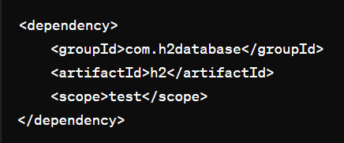
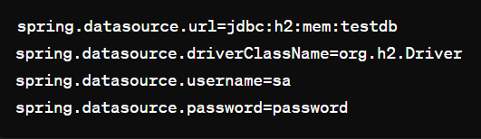
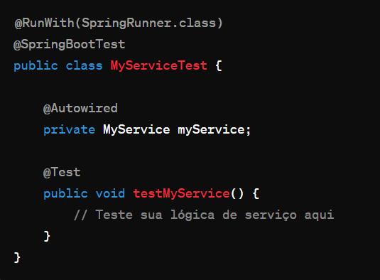

Explicanco o banco de dados H2
O H2 é um banco de dados relacional escrito em Java, que pode ser utilizado de diversas formas, incluindo integração com o Spring Framework para testes de aplicações. Abaixo, vou explicar detalhadamente o que é o H2, para que serve e como usá-lo para testes no Spring.
O que é o H2:
O H2 é um banco de dados relacional em memória ou em arquivo, o que significa que pode ser executado em memória durante o tempo de execução da aplicação ou persistir dados em um arquivo local. Ele é implementado em Java, o que o torna independente de plataforma. O H2 suporta a maioria dos recursos padrão do SQL, além de oferecer funcionalidades avançadas, como suporte a JSON, XML, dados espaciais e muito mais.
Para que serve o H2:
O H2 é frequentemente utilizado em ambientes de desenvolvimento e testes, especialmente em aplicações que utilizam o Spring Framework. Ele é ideal para testes unitários e de integração, pois permite que os desenvolvedores executem testes de forma rápida e eficiente, sem depender de um banco de dados externo.
Como usar o H2 para testes no Spring:
Para utilizar o H2 para testes no Spring, siga os passos abaixo:
Adicionar dependência ao projeto: Primeiro, você precisa adicionar a dependência do H2 ao seu projeto
Spring. Você pode fazer isso editando o arquivo pom.xml se estiver usando Maven, ou build.gradle se
estiver usando Gradle. Aqui está um exemplo de dependência Maven:

Configurar o DataSource no Spring:
No arquivo de configuração do Spring (application.properties ou application.yml), configure o
DataSource para usar o H2. Aqui está um exemplo de configuração usando o application.properties:

Neste exemplo, estamos configurando o
DataSource para usar o H2 em memória (jdbc:h2:mem:testdb), com o usuário padrão sa e senha password.
Criar esquema e dados de teste: Você pode definir scripts SQL para criar o esquema do banco de dados
e inserir dados de teste. Você pode fazer isso usando o arquivo schema.sql e data.sql na pasta
src/test/resources.
Escrever testes usando o H2: Agora você pode escrever testes que utilizam o banco de dados H2.
O Spring irá configurar automaticamente o DataSource para usar o H2 durante os testes. Aqui está um
exemplo de um teste usando JUnit:

Neste exemplo, MyService é o serviço que você deseja testar, e o Spring injetará automaticamente
uma instância desse serviço no teste.
Executar os testes: Agora você pode executar os testes como faria normalmente, e o Spring configurará
o ambiente de teste para usar o banco de dados H2.
Usar o H2 para testes no Spring oferece uma maneira conveniente e eficaz de testar suas aplicações
sem depender de um banco de dados externo, o que pode tornar seus testes mais rápidos e confiáveis.
@Entity:
A anotação @Entity é usada para marcar uma classe como uma entidade JPA (Java Persistence API). Isso significa
que a classe Category representa uma entidade no contexto de um modelo de dados relacional. Quando uma classe é
marcada com @Entity, o framework JPA reconhece essa classe como uma entidade que pode ser persistida no banco
de dados.
@Table(name = "tb_category"):
A anotação @Table é usada para mapear a classe Category para uma tabela específica no banco de dados.
No exemplo fornecido, a tabela é nomeada como "tb_category". Se o nome da tabela no banco de dados for
diferente do nome da classe, você pode especificar o nome da tabela como um parâmetro dentro da anotação @Table.
@Id:
A anotação @Id é usada para indicar que o campo id é a chave primária da entidade Category.
A chave primária é um identificador exclusivo para cada registro na tabela. No contexto do Spring
Data JPA, a presença dessa anotação em um campo indica ao framework que este campo deve ser tratado
como a chave primária da entidade.
@GeneratedValue(strategy = GenerationType.IDENTITY):
A anotação @GeneratedValue é usada para especificar a estratégia de geração de valores para a chave
primária. No exemplo fornecido, a estratégia usada é GenerationType.IDENTITY, que é comumente usada
em bancos de dados relacionais. Com essa estratégia, o banco de dados é responsável por gerar valores
para a chave primária automaticamente, conforme os registros são inseridos na tabela. Isso é útil
porque simplifica o código, pois não é necessário gerar manualmente valores para a chave primária
antes de persistir uma nova entidade.
Essas anotações são usadas em conjunto para definir o mapeamento entre a classe Category e a tabela
correspondente no banco de dados, incluindo a definição da chave primária e sua estratégia de geração
de valores. Isso permite que o Spring Data JPA manipule automaticamente a persistência e a recuperação
de instâncias da classe Category no banco de dados.